グラフデータスライサー
Graph-Data-Slicer
ワークシートに適用するフィルタ(ワークシートデータスライサーなど)だけでなく、グラフデータスライサーを使用してグラフに直接フィルターを適用することができます。

ワークシートデータスライサーとグラフデータスライサー
- ソースワークシートにフィルタがある場合、このワークシートからプロットされたグラフでデータフィルタをオンにすると、既存のワークシートフィルタが適用されます。これをワークシートデータスライサーと呼びます。
- ワークシートデータスライサーはワークシートに適用され、そのワークシートから作成されたすべてのグラフにも影響します。フィルタ(条件または有効/無効ステータス)を変更すると、ワークシートと、このワークシートから作成されたすべてのグラフが更新されます。逆もまた同様です。
- 元のワークシートにフィルタが設定されていない場合、そのワークシートから作成されたグラフ上でデータスライサーを有効にすると、フィルタを適用する列を選択できるダイアログが表示されます。このフィルタ機能がグラフデータスライサーです。
- グラフデータスライサーは現在のグラフにのみ適用され、元のワークシートのデータには影響しません。つまり、現在のグラフのフィルタは、同じワークシートからプロットされているグラフには影響しません。データスライサーのベースとなっているグラフウィンドウを削除すると、このスライサーによって得られたすべての分析や処理が削除されます。
グラフデータスライサーは、現在のグラフに影響を与えるだけでなく（ソースワークシートとは無関係に）、例えば、比較のためにプロットを複製するより有用な機能を持ち、今後も機能の改善を続ける予定です。
グラフにデータスライサーを追加
- ソースワークシートにデータフィルタが適用されていないグラフをアクティブにします。
- メニューデータ:スライサーを選択します。
または
ワークシートデータツールバーのデータフィルタを追加/削除ボタン をクリックします。
をクリックします。
または、
カーソルの表示が に変わるまでグラフページの端にカーソルを移動します。そしてクリックすると、ページレベルのミニツールバーが表示されます。データスライサーボタンをクリックします。
に変わるまでグラフページの端にカーソルを移動します。そしてクリックすると、ページレベルのミニツールバーが表示されます。データスライサーボタンをクリックします。
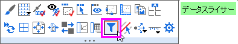
- グラフにスライサーを追加ダイアログが開きます。
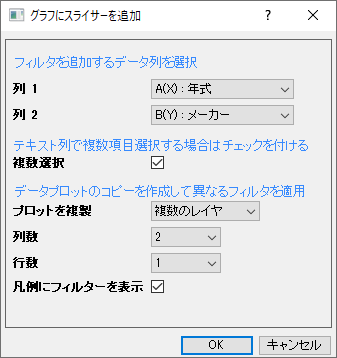
- スライサーを適用する列を2つまで選択します。スライサーは後でいつでも追加できます。
- 選択したフィルタ列がテキスト形式の場合、複数選択にチェックをつけることで、フィルタ条件として複数の項目を選択できるようになります。スライサーを追加した後に、単一選択と複数選択を切り替えることもできます。次のセクションを参照してください。
テキスト/カテゴリ列のフィルタには、2つの選択タイプがあります。
単一選択 vs. 複数選択
| 単一選択
|
複数選択
|
| 一度に1つの項目だけを選択するドロップダウンリストです。
|
複数の項目を選択するためのドロップダウンリストです。
グラフは、項目を選択/選択解除すると自動的に更新されます。
リストの外側をクリックして選択を終了できます。
|
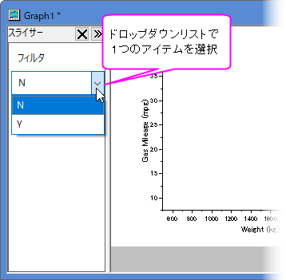
|
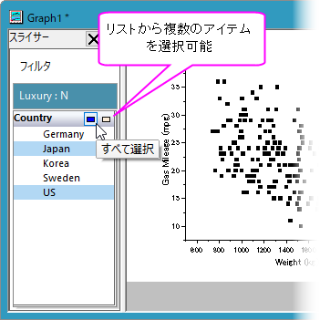
|
- 異なるフィルタ条件で直感的に比較するには、プロットを複製を選択します。
| プロットを複製
|
- プロットを複製しません。
- プロットを同じレイヤに複製します。複数レイヤグラフの場合、複製の際はこのオプションのみ使用できます。
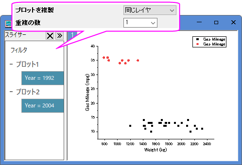
- プロットを複数のレイヤに複製します。このオプションは、単一レイヤグラフでのみ使用可能です。
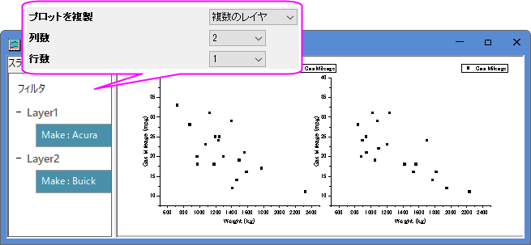
|
| 複製の数
|
プロットを複製 = 同じレイヤの場合、この編集ボックスを使用して、複製されるプロットの数を指定します。
|
行数/
列数
|
複数のレイヤ = プロットを複製の場合、この2つのドロップダウンリストを使って複製の数とパネルレイアウトを決定します。
複製の数は、列数 X 行数 - 1です。
|
| すべてのレイヤ/プロットで共通のフィルタ
|
- 複数レイヤグラフの場合、グラフにスライサーを追加ダイアログで定義したすべてのフィルタがすべてのレイヤに適用されます。このチェックボックスをオンにすると、すべてのレイヤに共通のフィルタ制御が設定され、すべてのレイヤで同じフィルタ条件が適用されます。
- チェックを外した場合、各レイヤは独自のフィルタ制御が可能です。この場合、異なるレイヤ上のフィルタは他のレイヤから独立した状態になります。つまり、レイヤごとに異なるフィルター条件を設定したり、既存のフィルターを削除したり、1つのレイヤに対して新しいフィルターを追加したりすることができますが、他のレイヤには影響しません。
スライサーを右クリックして、共通フィルターとしてフィルタに移動を選択して、複数のフィルタを1つの共通フィルタ制御にまとめることも可能です。
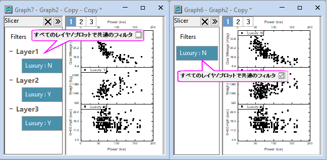
- さらに、すべてのプロットにフィルタを追加したり、ページに共通フィルタを追加することで、共通フィルタと個別フィルタを混在させることもできます。
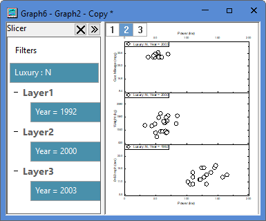
|
| 凡例にフィルターを表示
|
凡例に現在のフィルタ条件を表示するには、このチェックボックスにチェックを付けます。凡例はフィルタが変更されると自動的に更新されます。
ページレベルのミニツールバーのレイヤフィルタタイトルの追加ボタンで、レイヤタイトルにフィルタ情報を追加することもできます。
|
- グラフウィンドウの左側にデータスライサーパネルが表示され、設定したフィルタが一覧表示されます。グラフはそれに従い更新されます。このパネルで現在のフィルタ条件を変更したり、フィルタを追加したり、既存のフィルタの削除や並べ替えが可能です。詳細については、次のセクションを参照してください。
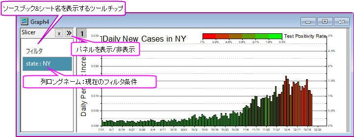
 | 元となるワークシート（グラフが作成されたワークシート）に1つ以上のフィルタが設定されている場合、そのフィルタが無効になっていても、データフィルタボタンでデータスライサパネルを有効にすると、すべてのワークシートフィルタがグラフウィンドウに引き継がれます。
この場合、新しいスライサーを追加することはできません。既存のフィルタの表示と編集のみ可能です。利用可能なエディションについては次のセクションを参照してください。
|
フィルタコントロール
- スライサーパネル内の空白部分を右クリックすると、コンテキストメニューが表示され、フィルタのコピー/貼り付け、フィルタの追加、フィルタ付きのレイヤの複製が可能です。
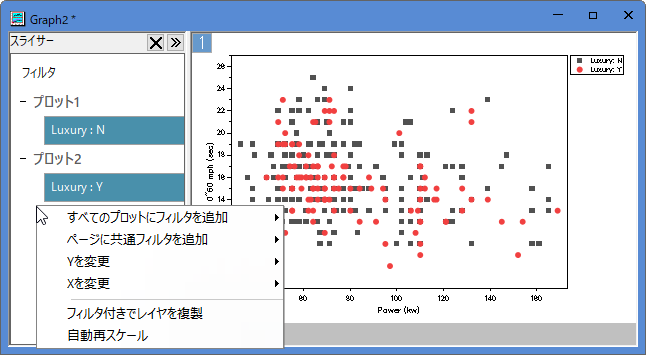
| すべてのプロットにフィルタを追加
|
サブメニューのリストから列を選択して、レイヤレベルのフィルタを追加します。このフィルタはすべてのレイヤ内のすべてのプロットに適用されますが、各レイヤに独立したフィルタ制御を持ちます。そのため、異なるレイヤに異なるフィルター条件を設定して比較することができます。
|
| ページに共通フィルタを追加
|
サブメニューから列を選んで、ページレベルの共通フィルタを追加します。このフィルタはすべてのレイヤ内のすべてのプロットに共通して適用され、1つのフィルタコントロールで一括制御できます。
|
Xを変更/
Yを変更
|
すべてのレイヤが同じX/Y列を共有している場合は、X/Yを変更し、すべてを表示するためにスケールを変更します。
|
| フィルター付きでレイヤを複製
|
現在のグラフに、フィルタ付きのレイヤを複製します。複数のフィルター条件を比較できます。
|
| 自動再スケール
|
この項目をチェックすると、フィルタ結果に応じて軸が自動的に再スケールされます。
|
- データスライサー上で右クリックすると、コンテキストメニューが表示され、データフィルタの無効化/削除、並び替え、編集が可能です。
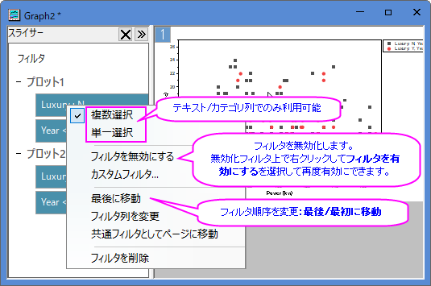
複数選択/
単一選択
|
テキスト/カテゴリ列のフィルタでは、複数選択と単一選択を利用できます。メニュー項目を選択して、2つの選択モードを切り替えられます。
|
カスタムフィルタ/
条件タイプを変更
|
フィルタを適用した列のフォーマットに応じて、異なるオプションが提供されます。
- テキストとカテゴリ
- テキスト/カテゴリスライサーを右クリックして、カスタムフィルタ...コンテキストメニューを選択すると、カスタムフィルタダイアログを利用できます。テキストフィルタの設定についてはこのページを参照してください。
- 数値
- 単純な編集の場合は、数値スライサを左クリックして単純な数値フィルタダイアログ開くか、スライサーを右クリックして条件タイプを変更コンテキストメニューを選択し、ポップアップリストから条件を選択します。
- 右クリックして、カスタムフィルタ...コンテキストメニューを使用してカスタムデータフィルタダイアログを開き、詳細な編集が可能です。数値フィルタの設定についてはこのページを参照してください。
- 条件タイプを変更: ロードを選択して、保存したフィルタ条件をロードします。
- 日付と時間
- 単純な編集の場合は、日付と時刻のスライサーを左クリックして単純な日付フィルタダイアログを開くか、スライサーを右クリックして条件タイプを変更コンテキストメニューを選択し、ポップアップリストから条件を選択します。
- 右クリックして、カスタムフィルタ...コンテキストメニューを使用してカスタムデータフィルタダイアログを開き、詳細な編集が可能です。日付フィルタの設定についてはこのページを参照してください。
- 条件タイプを変更: ロードを選択して、保存したフィルタ条件をロードします。
|
| フィルタ列を変更
|
ポップアップリストから、フィルタ列を選択して切り替えできます。
|
| 共通フィルタとしてページに移動
|
現在のレイヤに基づくデータスライサーの場合、このアイテムを選択するとページレベルに移動し、フィルタ条件がすべてのレイヤ (すべてのプロット) に適用され、同じフィルタコントロールを共有します。
|
| フィルタを削除
|
選択したデータスライサーを削除します。
- ワークシートデータツールバーのデータフィルタの追加と削除ボタンをクリックして、現在のグラフウィンドウ上のすべてのデータスライサーを削除できます。
- スライサーから派生したすべての解析も削除されることに注意してください。
|
データフィルタを使用したグラフの探索
フィルタデータの抽出
フィルタ処理されたプロットを右クリックし、新しいブックとしてスライサーのコピーを作成を選択します。
フィルタデータを含むSlicerというブックが作成されます。ユーザ定義パラメータ行フィルタ条件が表示されます。
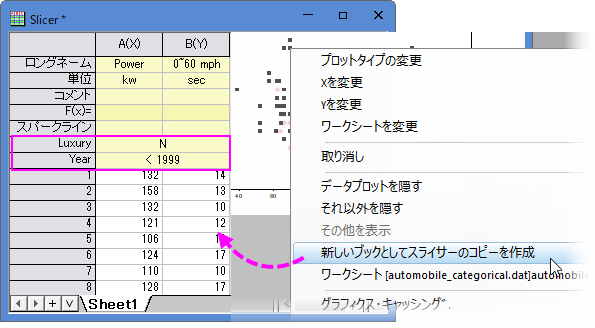
グラフデータスライサーを使用したグラフ上での分析

予め注意したいこと
- フィルタ条件の変更時に解析結果を再計算したい場合は、解析操作を実行する前にデータスライサを追加する必要があります。例えば、線形フィットポートシートからフィット曲線グラフを開いた場合
データスライサーを追加すると、フィルター条件を変更しても線形フィットの結果は更新されません。
- データスライサーを使用したグラフで実行される分析は、フィルタリングされたデータに基づいており、ソースデータから独立しています。この場合の解析結果は非表示のワークブックに出力されます。このワークブックは、解析の緑色の鍵のアイコンをクリックして結果に行くを選択することで開けます。逆に、レポートシートの緑色の鍵のアイコンをクリックするか、レポートシートのノート表> データフィルタセルのリンクをクリックすると、ソースグラフに移動できます。
- グラフウィンドウを削除すると、グラフデータフィルタに基づくすべての操作の出力が削除されることに注意してください。
- データスライサーを使用してグラフに対して何らかの分析を実行し、グラフを複製すると、分析操作と出力を含めるかどうかを尋ねるダイアログがポップアップ表示されます。
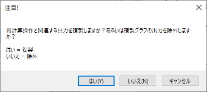
- はいをクリックすると、グラフと解析（操作と関連する出力）の両方を複製します。この場合、フィルタ条件または解析パラメータを変更しても、現在のグラフウィンドウのみで更新され、他のグラフウィンドウには影響しません。
- いいえをクリックすると、グラフのみを複製し、解析は複製しません。